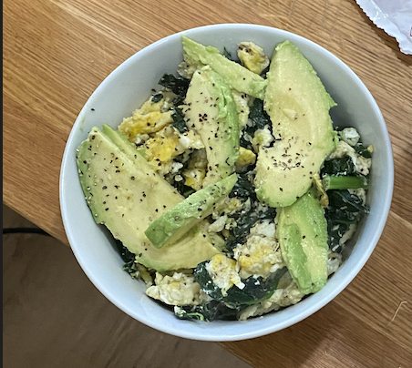

Breakfast Bowl

About this dish
This breakfast bowl is an old favorite of mine. Keto Friendly as well!
Ingredients
- 3 eggs
- Butter
- Salt
- Pepper
- 2 cups Kale
- 1/2 avocado
- optional: Everything But the Bagel Seasoning
Instructions
- Put 2 cups of kale into pan on medium heat. Salt generously and add 1/4 cup of water before covering to sautee.
- Meanwhile, mix three eggs in a separate bowl. Add salt and pepper.
- Once the Kale has wilted, separate it into another bowl and butter the pan before adding the eggs.
- While eggs are scrambling, slice half an avocado the long way into nice, even slices.
- Before the eggs are completely finished, add your Kale back into the pan.
- Finally, serve the scramble in a bowl. Add your avocado and some Everything But the Bagel seasoning for a great morning.